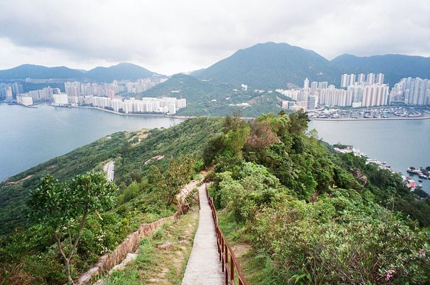

Welcome
Home Page
Login
KMB Bus Route
NWFB Bus Route
Message Board
Devil's Mountain

Devil Mountain is also known as Fortress Mountain, but it is located in the Yau Tong District, Kowloon. Due to the very good terrain, military facilities such as hilltop fort, bunker and Gefu fort were built on the mountain at the beginning of the last century. Although the fort was later removed, the remains of the bunkers were rated as Grade II historic buildings in 2009. In addition, the overgrown weeds are full of desolation, and they have naturally become a hot spot for check-in. The highest point of the Fort Devil’s Hill also offers a panoramic view of both sides of the Victoria Harbour, attracting many photographers to come here to take pictures of the sunset.
Devil's Hill check-in route details
Route: Yau Tong MTR Station -> Ko Chiu Road -> Tseung Kwan O Chinese Permanent Cemetery Passage -> ilson Path 3 Section -> Gough Fort -> Devil’s Hill Fort (check-in point) -> Ko Chiu Road -> Yau Tong MTR Station
Difficulty: ★★☆☆☆
Time: about 2 hours